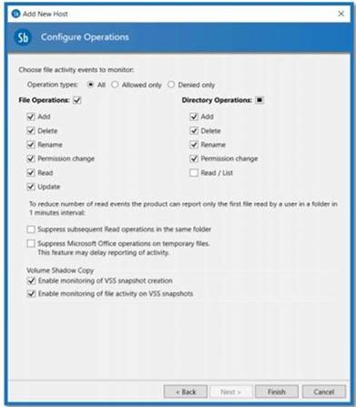

Summary: How to Configure Stealthbits Activity Monitor to send file system events to StealthDEFEND
Submitted by: Andy Muschlewski
Product: StealthDEFEND
Affected Versions: 2.0+
Affected Module: StealthDEFEND file system events
Dev Ticket: N/A
Resolved In Version: N/A
KB Type: How to
Issue: How to Configure Stealthbits Activity Monitor to send file system events to StealthDEFEND
Instructions: In order for StealthDEFEND to receive the event stream data, the Stealthbits Activity Monitor must be configured to do so. For file system activity events, use the StealthDEFEND Syslog template for the desired monitored host configuration.
Follow the steps to integrate with Stealthbits Activity Monitor v4.0+ for file system activity events:
Step 1 – Deploy the Stealthbits Activity Monitor activity agent and configure it to monitor the desired target host.
Step 2 – On the Monitored Hosts tab, select the host and click Edit to open the host’s properties window. Select the Syslog tab.
Step 3 – Select the UDP option for the Syslog protocol from the drop-down menu.
Step 4 – Type the StealthDEFEND server name in a SERVER:Port format in the textbox. The default port is 10000.
Step 5 – Click the ellipsis (…) to open the Syslog Message Template window.
Step 6 – Select StealthDEFEND for the Template.
Step 7 – Click OK to save the selection and close the Syslog Message Template window.
RECOMMENDED: Select the Comments tab and identify this output as being configured for StealthDEFEND.
Step 8 – Click OK to save the changes and close the host’s properties window.
The StealthDEFEND template will be assigned as the Syslog message template for the selected monitored host. StealthDEFEND will begin receiving event stream data.
The StealthDEFEND template contains the following information:
%SYSLOG_DATE%|StealthDEFEND|%HOST%|%PRODUCT%|%PRODUCT_VERSION%|cat=% EVENT_NAME% setting=%SETTING_NAME% iotype=Filesystem domain=%EVENT_SOURCE_NAME% time=%TIME_STAMP_UTC% username=%PERPETRATOR% process=%ORIGINATING_CLIENT% filename=%FILE_PATH% sourcehost=%ORIGINATING_SERVER% success=%SUCCESS% blocked=%BLOCKED_EVENT% attrname=%ATTRIBUTE_NAME% attrnewvalue=%ATTRIBUTE_VALUE% attroldvalue=%OLD_ATTRIBUTE_VALUE% sddl=%PERMISSIONS_SDDL_DIFF% uncpath=%UNCPATH% renameuncpath=%RENAMEUNCPATH% client=%ORIGINATING_CLIENT_HOST%
Additional considerations:
Stealth DEFEND can only see the events that the agent sending them is configured to capture. Be sure to check that the agent is configured to capture all file system events to be monitored by StealthDEFEND. (I.E. if the file operation “rename” is not enabled, StealthDEFEND might not see a Ransomware Threat).
RansomWare Identifies files created or renamed with filename patterns, prefixes or suffixes that match known ransomware patterns by user for a 24 hour period.

Firewall: StealthDEFEND uses UDP Port 10000 for Incoming File Events (Syslog)